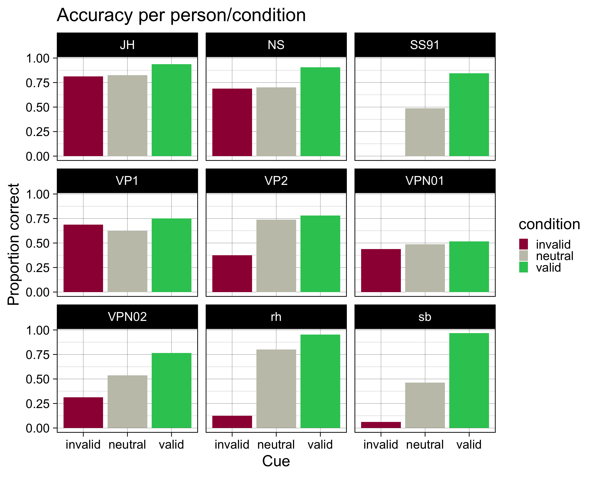

Daten importieren
![]()
RStudio Projekt
Nun wollen wir die Datensätze aus dem Verhaltensexperiment von der letzten Sitzung in R importieren.
Laden Sie das RStudio Projekt und öffnen Sie es. Im Projekt ist ein R Script File enthalten (import-data.R).
Einen Datensatz bearbeiten
Es gibt zwei Unterordner: testdata und data. In ersterem befindet sich ein Datensatz einer Testperson, in letzterem befinden sich mehrere Datensätze. Wir importieren und bearbeiten zuerst den Datensatz aus dem testdata Ordner, und wenden anschliessend das Gelernte gleichzeitig auf mehrere Datensätze an.
CSV File importieren
testdata <- read_csv("testdata/ZZ_rdk-discrimination_2022_Mar_07_1403.csv") Variablen überprüfen
glimpse(testdata)Rows: 167
Columns: 39
$ cue <chr> "none", "left", "right", "l…
$ direction <chr> "right", "right", "right", …
$ practice_block_loop.thisRepN <dbl> 0, 0, 0, 0, 0, 0, NA, NA, N…
$ practice_block_loop.thisTrialN <dbl> 0, 1, 2, 3, 4, 5, NA, NA, N…
$ practice_block_loop.thisN <dbl> 0, 1, 2, 3, 4, 5, NA, NA, N…
$ practice_block_loop.thisIndex <dbl> 5, 2, 1, 0, 4, 3, NA, NA, N…
$ main_blocks_loop.thisRepN <dbl> NA, NA, NA, NA, NA, NA, NA,…
$ main_blocks_loop.thisTrialN <dbl> NA, NA, NA, NA, NA, NA, NA,…
$ main_blocks_loop.thisN <dbl> NA, NA, NA, NA, NA, NA, NA,…
$ main_blocks_loop.thisIndex <dbl> NA, NA, NA, NA, NA, NA, NA,…
$ static_isi.started <dbl> 0.01033428, 0.03202713, 0.0…
$ static_isi.stopped <dbl> 2.010334, 2.032027, 2.03217…
$ fixation_pre.started <dbl> 26.79425, 36.16522, 44.7852…
$ fixation_pre.stopped <chr> "None", "None", "None", "No…
$ image.started <dbl> 27.19849, 36.28205, 46.0032…
$ image.stopped <chr> "None", "None", "None", "No…
$ fixation_post.started <dbl> 28.17814, 37.28240, 47.0037…
$ fixation_post.stopped <chr> "None", "None", "None", "No…
$ dots_background.started <dbl> 32.18642, 41.30145, 52.0107…
$ dots_background.stopped <chr> "None", "None", "None", "No…
$ dots_stimulus.started <dbl> 32.18642, 41.30145, 52.0107…
$ dots_stimulus.stopped <chr> "None", "None", "None", "No…
$ dots_keyboard_response.keys <chr> "None", "f", "j", "f", "Non…
$ dots_keyboard_response.started <dbl> 32.18642, 41.30145, 52.0107…
$ dots_keyboard_response.stopped <chr> "None", "None", "None", "No…
$ feedback_text.started <dbl> 33.70200, 42.28899, 52.9229…
$ feedback_text.stopped <chr> "None", "None", "None", "No…
$ dots_keyboard_response.rt <dbl> NA, 0.9339199, 0.8488816, 0…
$ instruction_main_text.started <dbl> NA, NA, NA, NA, NA, NA, 81.…
$ instruction_main_text.stopped <chr> NA, NA, NA, NA, NA, NA, "No…
$ instruction_main_keyboard_response.keys <chr> NA, NA, NA, NA, NA, NA, "sp…
$ instruction_main_keyboard_response.rt <dbl> NA, NA, NA, NA, NA, NA, 3.1…
$ instruction_main_keyboard_response.started <dbl> NA, NA, NA, NA, NA, NA, 81.…
$ instruction_main_keyboard_response.stopped <chr> NA, NA, NA, NA, NA, NA, "No…
$ Pseudonym <chr> "ZZ", "ZZ", "ZZ", "ZZ", "ZZ…
$ date <chr> "2022_Mar_07_1403", "2022_M…
$ expName <chr> "rdk-discrimination", "rdk-…
$ psychopyVersion <chr> "03.02.21", "03.02.21", "03…
$ frameRate <dbl> 59.9, 59.9, 59.9, 59.9, 59.…Practice Trials löschen
library(kableExtra)
testdata |>
slice_head(n = 12) |>
kbl() |>
kable_paper("striped", full_width = FALSE) |>
column_spec(2:7, bold = TRUE) |>
row_spec(1:6, bold = TRUE, color = "white", background = "#D7261E")| cue | direction | practice_block_loop.thisRepN | practice_block_loop.thisTrialN | practice_block_loop.thisN | practice_block_loop.thisIndex | main_blocks_loop.thisRepN | main_blocks_loop.thisTrialN | main_blocks_loop.thisN | main_blocks_loop.thisIndex | static_isi.started | static_isi.stopped | fixation_pre.started | fixation_pre.stopped | image.started | image.stopped | fixation_post.started | fixation_post.stopped | dots_background.started | dots_background.stopped | dots_stimulus.started | dots_stimulus.stopped | dots_keyboard_response.keys | dots_keyboard_response.started | dots_keyboard_response.stopped | feedback_text.started | feedback_text.stopped | dots_keyboard_response.rt | instruction_main_text.started | instruction_main_text.stopped | instruction_main_keyboard_response.keys | instruction_main_keyboard_response.rt | instruction_main_keyboard_response.started | instruction_main_keyboard_response.stopped | Pseudonym | date | expName | psychopyVersion | frameRate |
|---|---|---|---|---|---|---|---|---|---|---|---|---|---|---|---|---|---|---|---|---|---|---|---|---|---|---|---|---|---|---|---|---|---|---|---|---|---|---|
| none | right | 0 | 0 | 0 | 5 | NA | NA | NA | NA | 0.0103343 | 2.010334 | 26.79425 | None | 27.19849 | None | 28.17814 | None | 32.18642 | None | 32.18642 | None | None | 32.18642 | None | 33.70200 | None | NA | NA | NA | NA | NA | NA | NA | ZZ | 2022_Mar_07_1403 | rdk-discrimination | 03.02.21 | 59.9 |
| left | right | 0 | 1 | 1 | 2 | NA | NA | NA | NA | 0.0320271 | 2.032027 | 36.16522 | None | 36.28205 | None | 37.28240 | None | 41.30145 | None | 41.30145 | None | f | 41.30145 | None | 42.28899 | None | 0.9339199 | NA | NA | NA | NA | NA | NA | ZZ | 2022_Mar_07_1403 | rdk-discrimination | 03.02.21 | 59.9 |
| right | right | 0 | 2 | 2 | 1 | NA | NA | NA | NA | 0.0321732 | 2.032173 | 44.78521 | None | 46.00329 | None | 47.00374 | None | 52.01072 | None | 52.01072 | None | j | 52.01072 | None | 52.92295 | None | 0.8488816 | NA | NA | NA | NA | NA | NA | ZZ | 2022_Mar_07_1403 | rdk-discrimination | 03.02.21 | 59.9 |
| left | left | 0 | 3 | 3 | 0 | NA | NA | NA | NA | 0.0321533 | 2.032153 | 55.39138 | None | 56.19407 | None | 57.22527 | None | 61.23181 | None | 61.23181 | None | f | 61.23181 | None | 62.21611 | None | 0.9396018 | NA | NA | NA | NA | NA | NA | ZZ | 2022_Mar_07_1403 | rdk-discrimination | 03.02.21 | 59.9 |
| none | left | 0 | 4 | 4 | 4 | NA | NA | NA | NA | 0.0321391 | 2.032139 | 64.71204 | None | 64.81315 | None | 65.84603 | None | 69.25240 | None | 69.25240 | None | None | 69.25240 | None | 70.78541 | None | NA | NA | NA | NA | NA | NA | NA | ZZ | 2022_Mar_07_1403 | rdk-discrimination | 03.02.21 | 59.9 |
| right | left | 0 | 5 | 5 | 3 | NA | NA | NA | NA | 0.0323178 | 2.032318 | 73.24960 | None | 74.45209 | None | 75.48391 | None | 79.99045 | None | 79.99045 | None | f | 79.99045 | None | 80.80311 | None | 0.7490084 | NA | NA | NA | NA | NA | NA | ZZ | 2022_Mar_07_1403 | rdk-discrimination | 03.02.21 | 59.9 |
| NA | NA | NA | NA | NA | NA | NA | NA | NA | NA | NA | NA | NA | NA | NA | NA | NA | NA | NA | NA | NA | NA | NA | NA | NA | NA | NA | NA | 81.30346 | None | space | 3.187924 | 81.30346 | None | ZZ | 2022_Mar_07_1403 | rdk-discrimination | 03.02.21 | 59.9 |
| right | right | NA | NA | NA | NA | 0 | 0 | 0 | 18 | 0.0160001 | 2.016000 | 86.52245 | None | 86.89231 | None | 87.92302 | None | 92.92987 | None | 92.92987 | None | j | 92.92987 | None | 93.70924 | None | 0.7136441 | NA | NA | NA | NA | NA | NA | ZZ | 2022_Mar_07_1403 | rdk-discrimination | 03.02.21 | 59.9 |
| right | right | NA | NA | NA | NA | 0 | 1 | 1 | 31 | 0.0318162 | 2.031816 | 96.17699 | None | 96.54602 | None | 97.57770 | None | 101.58423 | None | 101.58423 | None | j | 101.58423 | None | 102.26673 | None | 0.6271285 | NA | NA | NA | NA | NA | NA | ZZ | 2022_Mar_07_1403 | rdk-discrimination | 03.02.21 | 59.9 |
| none | right | NA | NA | NA | NA | 0 | 2 | 2 | 66 | 0.0321148 | 2.032115 | 104.76463 | None | 105.13302 | None | 106.16508 | None | 110.67183 | None | 110.67183 | None | f | 110.67183 | None | 111.38828 | None | 0.6703410 | NA | NA | NA | NA | NA | NA | ZZ | 2022_Mar_07_1403 | rdk-discrimination | 03.02.21 | 59.9 |
| none | right | NA | NA | NA | NA | 0 | 3 | 3 | 75 | 0.0321121 | 2.032112 | 113.88535 | None | 115.08794 | None | 116.11989 | None | 119.52612 | None | 119.52612 | None | j | 119.52612 | None | 120.15512 | None | 0.5738488 | NA | NA | NA | NA | NA | NA | ZZ | 2022_Mar_07_1403 | rdk-discrimination | 03.02.21 | 59.9 |
| left | left | NA | NA | NA | NA | 0 | 4 | 4 | 13 | 0.0321118 | 2.032112 | 122.62295 | None | 123.82583 | None | 124.85742 | None | 129.36397 | None | 129.36397 | None | j | 129.36397 | None | 130.25975 | None | 0.8405913 | NA | NA | NA | NA | NA | NA | ZZ | 2022_Mar_07_1403 | rdk-discrimination | 03.02.21 | 59.9 |
testdata |>
slice_head(n = 12) |>
select(starts_with("main_block")) |>
kbl() |>
kable_paper("striped", full_width = FALSE) |>
row_spec(1:7, bold = TRUE, color = "white", background = "#D7261E")| main_blocks_loop.thisRepN | main_blocks_loop.thisTrialN | main_blocks_loop.thisN | main_blocks_loop.thisIndex |
|---|---|---|---|
| NA | NA | NA | NA |
| NA | NA | NA | NA |
| NA | NA | NA | NA |
| NA | NA | NA | NA |
| NA | NA | NA | NA |
| NA | NA | NA | NA |
| NA | NA | NA | NA |
| 0 | 0 | 0 | 18 |
| 0 | 1 | 1 | 31 |
| 0 | 2 | 2 | 66 |
| 0 | 3 | 3 | 75 |
| 0 | 4 | 4 | 13 |
Die Variable main_blocks_loop.thisN ist die Trialnummer. Diese können wir verwenden, um die Zeilen auszuschliessen, die nicht zum Main Block gehören.
# A tibble: 160 × 35
cue direction main_blocks_loop.thisRepN main_blocks_loop.… main_blocks_loo…
<chr> <chr> <dbl> <dbl> <dbl>
1 right right 0 0 0
2 right right 0 1 1
3 none right 0 2 2
4 none right 0 3 3
5 left left 0 4 4
6 none right 0 5 5
7 none left 0 6 6
8 left left 0 7 7
9 left right 0 8 8
10 none right 0 9 9
# … with 150 more rows, and 30 more variables:
# main_blocks_loop.thisIndex <dbl>, static_isi.started <dbl>,
# static_isi.stopped <dbl>, fixation_pre.started <dbl>,
# fixation_pre.stopped <chr>, image.started <dbl>, image.stopped <chr>,
# fixation_post.started <dbl>, fixation_post.stopped <chr>,
# dots_background.started <dbl>, dots_background.stopped <chr>,
# dots_stimulus.started <dbl>, dots_stimulus.stopped <chr>, …Variablen auswählen
testdata |>
select(-contains("static"),
-contains("fixation"),
-contains("image"),
-contains("instruction"),
-contains("feedback"))# A tibble: 167 × 23
cue direction practice_block_loop.thisRe… practice_block_… practice_block_…
<chr> <chr> <dbl> <dbl> <dbl>
1 none right 0 0 0
2 left right 0 1 1
3 right right 0 2 2
4 left left 0 3 3
5 none left 0 4 4
6 right left 0 5 5
7 <NA> <NA> NA NA NA
8 right right NA NA NA
9 right right NA NA NA
10 none right NA NA NA
# … with 157 more rows, and 18 more variables:
# practice_block_loop.thisIndex <dbl>, main_blocks_loop.thisRepN <dbl>,
# main_blocks_loop.thisTrialN <dbl>, main_blocks_loop.thisN <dbl>,
# main_blocks_loop.thisIndex <dbl>, dots_background.started <dbl>,
# dots_background.stopped <chr>, dots_stimulus.started <dbl>,
# dots_stimulus.stopped <chr>, dots_keyboard_response.keys <chr>,
# dots_keyboard_response.started <dbl>, …testdata# A tibble: 167 × 23
cue direction practice_block_loop.thisRe… practice_block_… practice_block_…
<chr> <chr> <dbl> <dbl> <dbl>
1 none right 0 0 0
2 left right 0 1 1
3 right right 0 2 2
4 left left 0 3 3
5 none left 0 4 4
6 right left 0 5 5
7 <NA> <NA> NA NA NA
8 right right NA NA NA
9 right right NA NA NA
10 none right NA NA NA
# … with 157 more rows, and 18 more variables:
# practice_block_loop.thisIndex <dbl>, main_blocks_loop.thisRepN <dbl>,
# main_blocks_loop.thisTrialN <dbl>, main_blocks_loop.thisN <dbl>,
# main_blocks_loop.thisIndex <dbl>, dots_background.started <dbl>,
# dots_background.stopped <chr>, dots_stimulus.started <dbl>,
# dots_stimulus.stopped <chr>, dots_keyboard_response.keys <chr>,
# dots_keyboard_response.started <dbl>, …Variablen umbennen
testdata <- testdata |>
select(trial = main_blocks_loop.thisN,
ID = Pseudonym,
cue,
direction,
response = dots_keyboard_response.keys,
rt = dots_keyboard_response.rt)testdata# A tibble: 167 × 6
trial ID cue direction response rt
<dbl> <chr> <chr> <chr> <chr> <dbl>
1 NA ZZ none right None NA
2 NA ZZ left right f 0.934
3 NA ZZ right right j 0.849
4 NA ZZ left left f 0.940
5 NA ZZ none left None NA
6 NA ZZ right left f 0.749
7 NA ZZ <NA> <NA> <NA> NA
8 0 ZZ right right j 0.714
9 1 ZZ right right j 0.627
10 2 ZZ none right f 0.670
# … with 157 more rowsNeue Variablen definieren
Alternative:
testdata <- testdata |>
mutate(choice = if_else(response == "j", "right", "left"),
response = as.numeric(choice == "right"))Wir erstellen ausserdem hier eine Variable, welche angibt, ob der Cue valid, invalid oder neutral war. Ein Cue ist genau dann valide, wenn er dieselbe Richtung hat wie der RDK Stimulus, d.h. cue == direction.
testdata <- testdata |>
mutate(correct = as.numeric(choice == direction))Gruppierungsvariablen
glimpse(testdata)Rows: 167
Columns: 9
$ trial <dbl> NA, NA, NA, NA, NA, NA, NA, 0, 1, 2, 3, 4, 5, 6, 7, 8, 9, 10…
$ ID <chr> "ZZ", "ZZ", "ZZ", "ZZ", "ZZ", "ZZ", "ZZ", "ZZ", "ZZ", "ZZ", …
$ cue <chr> "none", "left", "right", "left", "none", "right", NA, "right…
$ direction <chr> "right", "right", "right", "left", "left", "left", NA, "righ…
$ response <dbl> 0, 0, 1, 0, 0, 0, NA, 1, 1, 0, 1, 1, 1, 1, 0, 0, 1, 0, 0, 0,…
$ rt <dbl> NA, 0.9339199, 0.8488816, 0.9396018, NA, 0.7490084, NA, 0.71…
$ choice <chr> "left", "left", "right", "left", "left", "left", NA, "right"…
$ condition <chr> "neutral", "invalid", "valid", "valid", "neutral", "invalid"…
$ correct <dbl> 0, 0, 1, 1, 1, 1, NA, 1, 1, 0, 1, 0, 1, 0, 1, 0, 1, 1, 1, 1,…testdata <- testdata |>
mutate_if(is.character, as.factor)glimpse(testdata)Rows: 167
Columns: 9
$ trial <dbl> NA, NA, NA, NA, NA, NA, NA, 0, 1, 2, 3, 4, 5, 6, 7, 8, 9, 10…
$ ID <fct> ZZ, ZZ, ZZ, ZZ, ZZ, ZZ, ZZ, ZZ, ZZ, ZZ, ZZ, ZZ, ZZ, ZZ, ZZ, …
$ cue <fct> none, left, right, left, none, right, NA, right, right, none…
$ direction <fct> right, right, right, left, left, left, NA, right, right, rig…
$ response <dbl> 0, 0, 1, 0, 0, 0, NA, 1, 1, 0, 1, 1, 1, 1, 0, 0, 1, 0, 0, 0,…
$ rt <dbl> NA, 0.9339199, 0.8488816, 0.9396018, NA, 0.7490084, NA, 0.71…
$ choice <fct> left, left, right, left, left, left, NA, right, right, left,…
$ condition <fct> neutral, invalid, valid, valid, neutral, invalid, NA, valid,…
$ correct <dbl> 0, 0, 1, 1, 1, 1, NA, 1, 1, 0, 1, 0, 1, 0, 1, 0, 1, 1, 1, 1,…Accuracy pro Bedingung
Wir können nun die accuracy in jeder Cue-Bedingung berechnen. Es gibt hier zwei Möglichkeiten: wir berechen die Anzahl Trials (N), und die Anzahl korrekter Antworten (ncorrect) separat. Der Anteil korrekter Antworten ist dann einfach ncorrect/N. Dasselbe Ergebnis erhalten wir, wenn wir einfach den Mittelwert der korrekten Antworten nehmen.
testaccuracy <- testdata |>
group_by(condition) |>
summarise(N = n(),
ncorrect = sum(correct),
accuracy = ncorrect/N,
accuracy2 = mean(correct))
testaccuracy# A tibble: 4 × 5
condition N ncorrect accuracy accuracy2
<fct> <int> <dbl> <dbl> <dbl>
1 invalid 18 14 0.778 0.778
2 neutral 82 67 0.817 0.817
3 valid 66 62 0.939 0.939
4 <NA> 1 NA NA NA Mehrere Datensätze bearbeiten
Nun werden wir dasselbe wie oben machen, aber dieses Mal für alle .csv Files, die in einem Ordner gespeichert sind.
Funktion definieren
Nun wollen wir die ersten paar Schritte gleichzeitig auf mehrere Files anwenden:
-
CSVFile einlesen - Filename hinzufügen
- Practice Trials löschen
- Practice Variablen löschen
Dieser Vorgang ist in R ziemlich elegant. Anstatt dass wir manuell über alle Files iterieren müssen, können wir eine Funktion definieren, die wir auf ein File anwenden können, und dann wenden wir diese Funktion auf alle Files an.
Die Funktion, welche wir auf ein einzelnes .csv File anweden möchten, ist diese:
Alle Files in einem Ordner auflisten
datadir <- "data/"
list_of_files <- datadir |>
list.files(pattern = "csv", recursive = TRUE, full.names = TRUE)list_of_files[1] "data//JH_rdk-discrimination_2022_Mar_07_1403.csv"
[2] "data//NS_rdk-discrimination_2022_Mar_07_1331.csv"
[3] "data//rh_rdk-discrimination_2022_Mar_02_1105.csv"
[4] "data//sb_rdk-discrimination_2022_Mar_06_0746.csv"
[5] "data//SS91_rdk-discrimination_2022_Mar_06_0953.csv"
[6] "data//VP1_rdk-discrimination_2022_Mar_07_1237.csv"
[7] "data//VP2_rdk-discrimination_2022_Mar_07_1302.csv"
[8] "data//VPN01_rdk-discrimination_2022_Mar_01_2142.csv"
[9] "data//VPN02_rdk-discrimination_2022_Mar_01_2208.csv"Funktion auf Liste anwenden
data <- list_of_files |>
map_dfr(~ import_function(.x))Variablen auswählen und umbennen
data <- data |>
select(trial = main_blocks_loop.thisN,
ID = Pseudonym,
cue,
direction,
response = dots_keyboard_response.keys,
rt = dots_keyboard_response.rt)Neue Variablen definieren
Korrekte Antworten
data <- data |>
mutate(correct = as.numeric(choice == direction))glimpse(data)Rows: 1,440
Columns: 8
$ trial <dbl> 0, 1, 2, 3, 4, 5, 6, 7, 8, 9, 10, 11, 12, 13, 14, 15, 16, 17…
$ ID <chr> "JH", "JH", "JH", "JH", "JH", "JH", "JH", "JH", "JH", "JH", …
$ cue <chr> "right", "right", "none", "none", "left", "none", "none", "l…
$ direction <chr> "right", "right", "right", "right", "left", "right", "left",…
$ response <dbl> 1, 1, 0, 1, 1, 1, 1, 0, 0, 1, 0, 0, 0, 0, 1, 1, 0, 0, 1, 0, …
$ rt <dbl> 0.7136441, 0.6271285, 0.6703410, 0.5738488, 0.8405913, 0.667…
$ choice <chr> "right", "right", "left", "right", "right", "right", "right"…
$ correct <dbl> 1, 1, 0, 1, 0, 1, 0, 1, 0, 1, 1, 1, 1, 1, 1, 1, 1, 1, 1, 1, …data |>
slice_head(n = 20)# A tibble: 20 × 8
trial ID cue direction response rt choice correct
<dbl> <chr> <chr> <chr> <dbl> <dbl> <chr> <dbl>
1 0 JH right right 1 0.714 right 1
2 1 JH right right 1 0.627 right 1
3 2 JH none right 0 0.670 left 0
4 3 JH none right 1 0.574 right 1
5 4 JH left left 1 0.841 right 0
6 5 JH none right 1 0.668 right 1
7 6 JH none left 1 1.12 right 0
8 7 JH left left 0 0.640 left 1
9 8 JH left right 0 1.13 left 0
10 9 JH none right 1 1.03 right 1
11 10 JH none left 0 1.35 left 1
12 11 JH left left 0 0.688 left 1
13 12 JH left left 0 0.721 left 1
14 13 JH none left 0 0.655 left 1
15 14 JH right right 1 1.02 right 1
16 15 JH none right 1 1.12 right 1
17 16 JH left left 0 1.08 left 1
18 17 JH right left 0 0.643 left 1
19 18 JH right right 1 0.716 right 1
20 19 JH left left 0 0.578 left 1Cue-Bedingungsvariable
Daten als CSV speichern
An dieser Stelle speichern wir den neu kreierten Datensatz als .csv File. Somit können wir die Daten einfach importieren, ohne die ganzen Schritte wiederholen zu müssen.
data |> write_csv(file = "data_clean/rdkdata.csv")data |>
slice_head(n = 20)# A tibble: 20 × 9
trial ID cue direction response rt choice correct condition
<dbl> <chr> <chr> <chr> <dbl> <dbl> <chr> <dbl> <chr>
1 0 JH right right 1 0.714 right 1 valid
2 1 JH right right 1 0.627 right 1 valid
3 2 JH none right 0 0.670 left 0 neutral
4 3 JH none right 1 0.574 right 1 neutral
5 4 JH left left 1 0.841 right 0 valid
6 5 JH none right 1 0.668 right 1 neutral
7 6 JH none left 1 1.12 right 0 neutral
8 7 JH left left 0 0.640 left 1 valid
9 8 JH left right 0 1.13 left 0 invalid
10 9 JH none right 1 1.03 right 1 neutral
11 10 JH none left 0 1.35 left 1 neutral
12 11 JH left left 0 0.688 left 1 valid
13 12 JH left left 0 0.721 left 1 valid
14 13 JH none left 0 0.655 left 1 neutral
15 14 JH right right 1 1.02 right 1 valid
16 15 JH none right 1 1.12 right 1 neutral
17 16 JH left left 0 1.08 left 1 valid
18 17 JH right left 0 0.643 left 1 invalid
19 18 JH right right 1 0.716 right 1 valid
20 19 JH left left 0 0.578 left 1 valid Gruppierungsvariablen
data <- data |>
mutate_if(is.character, as.factor)glimpse(data)Rows: 1,440
Columns: 9
$ trial <dbl> 0, 1, 2, 3, 4, 5, 6, 7, 8, 9, 10, 11, 12, 13, 14, 15, 16, 17…
$ ID <fct> JH, JH, JH, JH, JH, JH, JH, JH, JH, JH, JH, JH, JH, JH, JH, …
$ cue <fct> right, right, none, none, left, none, none, left, left, none…
$ direction <fct> right, right, right, right, left, right, left, left, right, …
$ response <dbl> 1, 1, 0, 1, 1, 1, 1, 0, 0, 1, 0, 0, 0, 0, 1, 1, 0, 0, 1, 0, …
$ rt <dbl> 0.7136441, 0.6271285, 0.6703410, 0.5738488, 0.8405913, 0.667…
$ choice <fct> right, right, left, right, right, right, right, left, left, …
$ correct <dbl> 1, 1, 0, 1, 0, 1, 0, 1, 0, 1, 1, 1, 1, 1, 1, 1, 1, 1, 1, 1, …
$ condition <fct> valid, valid, neutral, neutral, valid, neutral, neutral, val…Accuracy pro Person/Bedingung
Accuracy pro Person und pro Bedingung berechnen.
accuracy <- data |>
group_by(ID, condition) |>
summarise(N = n(),
ncorrect = sum(correct),
accuracy = mean(correct))`summarise()` has grouped output by 'ID'. You can override using the `.groups`
argument.accuracy# A tibble: 27 × 5
# Groups: ID [9]
ID condition N ncorrect accuracy
<fct> <fct> <int> <dbl> <dbl>
1 JH invalid 16 13 0.812
2 JH neutral 80 66 0.825
3 JH valid 64 60 0.938
4 NS invalid 16 11 0.688
5 NS neutral 80 56 0.7
6 NS valid 64 58 0.906
7 rh invalid 16 2 0.125
8 rh neutral 80 64 0.8
9 rh valid 64 61 0.953
10 sb invalid 16 1 0.0625
# … with 17 more rowsVisualisieren
accuracy |>
ggplot(aes(x = condition, y = accuracy, fill = condition)) +
geom_col() +
scale_fill_manual(
values = c(invalid = "#9E0142",
neutral = "#C4C4B7",
valid = "#2EC762")
) +
labs(
x = "Cue",
y = "Proportion correct",
title = "Accuracy per person/condition"
) +
theme_linedraw(base_size = 28) +
facet_wrap(~ID)
Reuse
Citation
@online{ellis2022,
author = {Andrew Ellis},
title = {Daten Importieren},
date = {2022-03-08},
url = {https://kogpsy.github.io/neuroscicomplabFS22//pages/chapters/02_importing_data.html},
langid = {en}
}